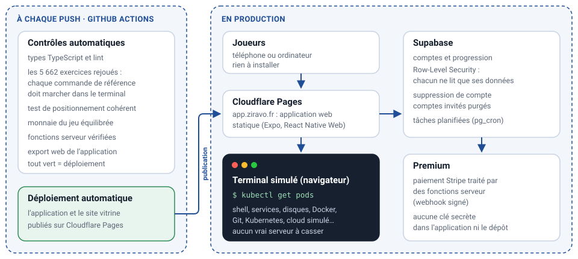
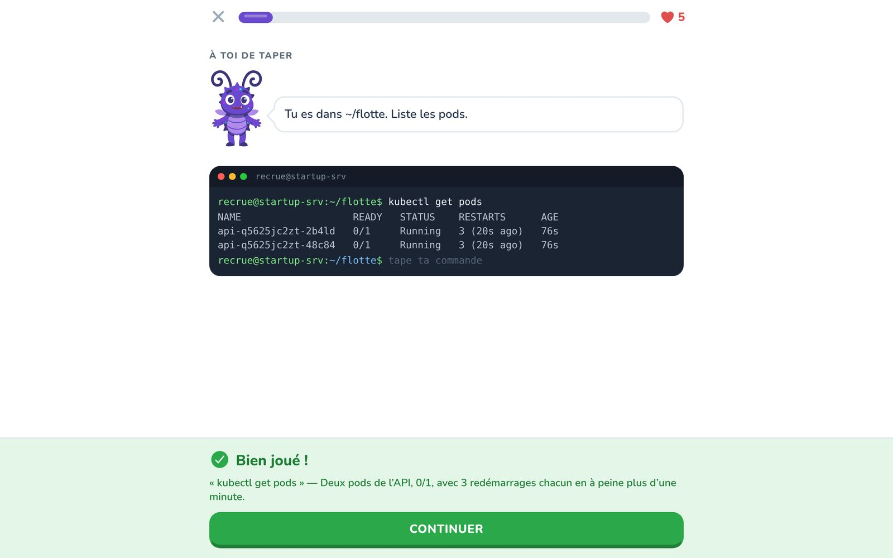
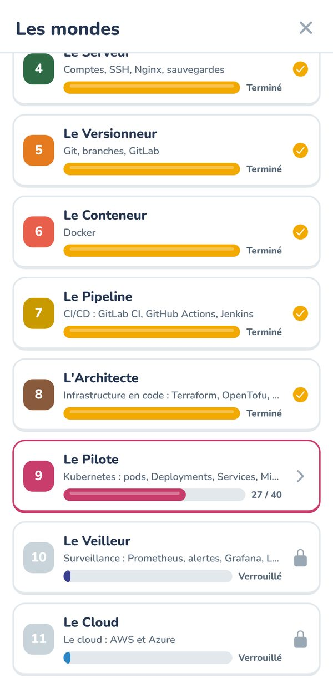
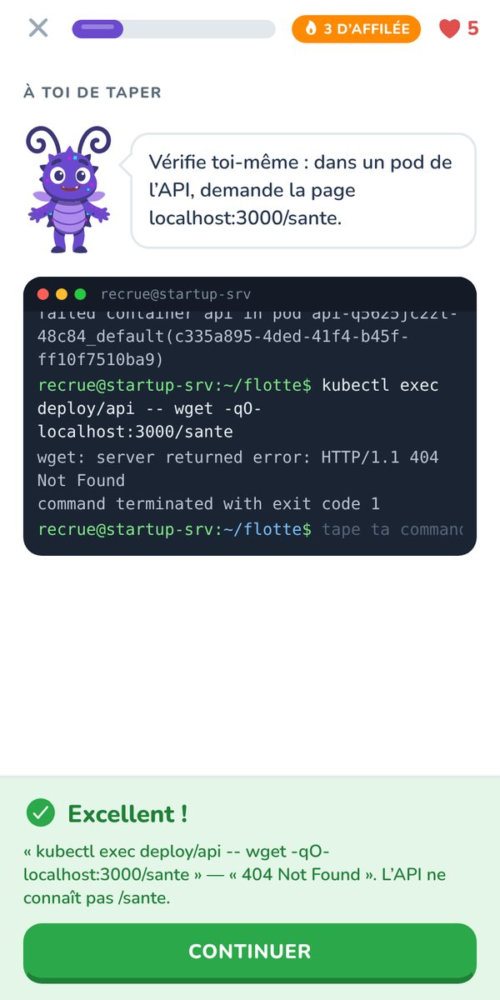

Étude de cas · simulation Linux et intégration continue
Ziravo
Une application pour apprendre les métiers de la tech en jouant, comme on apprend une langue. On tape de vraies commandes dans un terminal simulé, directement dans le navigateur : rien à installer, aucun serveur à casser.
- 539leçons en ligne, en 12 mondes
- 2 685commandes à taper dans le terminal simulé
- 5 662exercices rejoués à chaque modification
- 0exercice cassé toléré : la CI bloque
Bug a glissé le mot de passe de la base dans un commit. Le joueur remonte l’histoire avec
git log, trouve le fichier avec cat config.json, l’ajoute au .gitignore, puis découvre avec git status que ça ne suffit pas : le fichier est toujours suivi. Chaque commande est vraiment exécutée par le terminal simulé.Situation
Pour apprendre l’administration système, il faut un serveur. Les débutants n’en ont pas, ont peur de casser quelque chose, et les cours en vidéo restent passifs : on regarde quelqu’un taper des commandes, on ne les tape pas.
Je voulais l’équivalent d’une application de langues pour les métiers de la tech : quelques minutes par jour, sur téléphone, en pratiquant pour de vrai.
Tâche
Simuler de façon crédible un serveur Linux, et les outils qui tournent dessus, entièrement dans le navigateur. Chaque leçon devait partir d’une vraie situation de travail, comme une panne à réparer.
Et garantir que le contenu reste juste en grandissant : avec des milliers d’exercices, une seule modification du moteur peut casser une leçon écrite des semaines plus tôt.
Actions
- Écrire le moteur de simulation. Un terminal en TypeScript : le shell et ses fichiers, les droits, les processus et les signaux, systemd et le journal, les paquets, les disques (partitions, montage, fstab, LVM, RAID), Docker, Git, Kubernetes, et des clouds simulés. Chaque leçon démarre d’un état préparé : un service arrêté, un disque plein, un fstab cassé.
- Apprendre par les incidents. Chaque chapitre est une journée de travail qui se termine par un incident à résoudre dans le terminal. On apprend une commande parce qu’on en a besoin, pas pour la réciter.
- Tester le contenu comme du code. Un script rejoue chaque exercice : la commande de référence doit être acceptée par le terminal simulé, et chaque identifiant de leçon doit être unique. D’autres contrôles vérifient le test de positionnement et l’équilibre de la monnaie du jeu.
- Automatiser la publication. À chaque push, GitHub Actions vérifie les types et le lint, rejoue les 5 662 exercices, construit l’application web et le site vitrine, puis les publie sur Cloudflare Pages. Si un seul exercice casse, rien ne part.
- Protéger les comptes. Supabase garde les comptes et la progression, avec la Row-Level Security : chacun ne lit que ses données. La suppression de compte et la purge des comptes invités sont automatiques. L’abonnement passe par Stripe, traité par des fonctions serveur qui vérifient la signature du webhook.
- Penser au téléphone d’abord. Une application web qui tient sur un petit écran, avec des commandes à toucher pour aider à taper, et une mise en page à trois colonnes sur ordinateur.
Résultats
- Ziravo est en ligne sur ziravo.fr, avec deux parcours ouverts : DevOps, et Admin système et réseau.
- 539 leçons et 5 662 exercices, dont 2 685 commandes à taper dans le terminal simulé.
- Chaque modification rejoue tous les exercices : un monde entier peut être ajouté sans casser les précédents.
- Le site vitrine calcule ses chiffres directement depuis les leçons : ils ne peuvent pas être faux.
Ce que j’en retiens. Pour simuler Linux, il faut savoir exactement comment il se comporte : un fichier qui disparaît quand on monte un disque par-dessus, un umount refusé parce qu’on est dans le dossier. Écrire le simulateur m’a appris le système plus en profondeur que de simplement l’utiliser.
Architecture

En images



